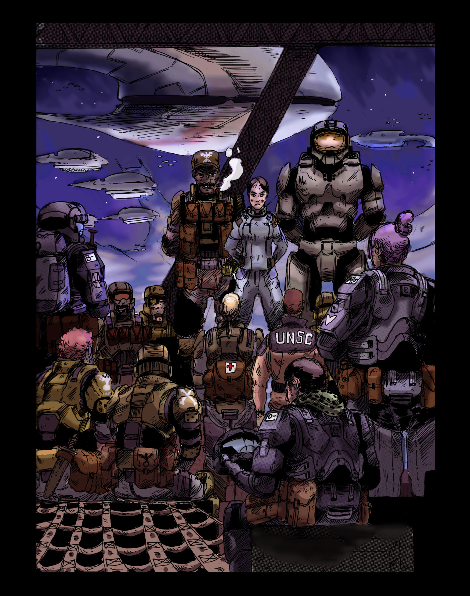

- Operation: BLIND FAITH (Briefing) -
Halo 3
Commander Miranda Keyes, Master Chief Petty Officer John-117, and Sgt Major Avery Johnson brief the Marines participating in Operation: BLIND FAITH’s surface engagements . Among them several hardened veterans of The Battle of Earth as well as the Battle of Installation 04 - all eager to see the war’s end.
Operation: BLIND FAITH marked the final engagement between the Covenant Empire and the United Nations Space Command. Its the only known UNSC operation conducted outside the known galaxy.Daily Drawing Challenge 62: More Halo fanart! Yay! Hey all those who read this, be sure to inbox me Halo moments you’d like to see depicted!